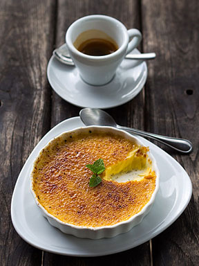

From Wikipedia, the free encyclopedia

Alternative names Burnt cream, crema catalana, Trinity cream
Course Dessert
Place of origin France
Serving temperature Room temperature
Main ingredients Custard, caramel
Cookbook: Crème brûlée Media: Crème brûlée
Crème brûlée (/ˌkrɛm bruːˈleɪ/; French pronunciation: [kʁɛm bʁy.le]), also known as burnt cream, crema catalana, or Trinity cream[1] is a dessert consisting of a rich custard base topped with a contrasting layer of hard caramel. It is normally served at room temperature. The custard base is traditionally flavored with vanilla, but can have a variety of other flavorings.
The earliest known reference to Crème brûlée in print appears in François Massialot's 1691 cookbook Cuisinier
royal et bourgeois.[2][3] The name "burnt cream" was used in the 1702 English translation.[4] Confusingly, in 1740 Massailot referred to a similar recipe as crême à l'Angloise, 'English cream'. The
dish then vanished from French cookbooks until the 1980s.[2] A version of crème brûlée (known
locally as "Trinity Cream" or "Cambridge burnt cream") was introduced at Trinity College, Cambridge, in 1879 with
the college arms "impressed on top of the cream with a branding iron".[1]
Crème brûlée became extremely popular in the 1980s, "a symbol of that decade's self-indulgence and the darling of the restaurant boom". [5][6]
In Catalan cuisine, crema catalana ("Catalan cream") or crema quemada ("Burnt cream"), is a dish similar to Crème brûlée, although the sugar (caramelized with a specially made iron, rather than a flame) is a recent innovation. [5] Traditionally known as crema de Sant Josep, it was originally served on Saint Joseph's Day although nowadays it is consumed at all times of the year. The custard is flavored with lemon or orange zest, and cinnamon. [6]
Crème brûlée is usually served in individual ramekins. Discs of caramel may be prepared separately and put on top just before serving, or the caramel may be formed directly on top of the custard, immediately before serving. To do this, sugar is sprinkled onto the custard, then caramelized under a salamander broiler or with a butane torch.[7]